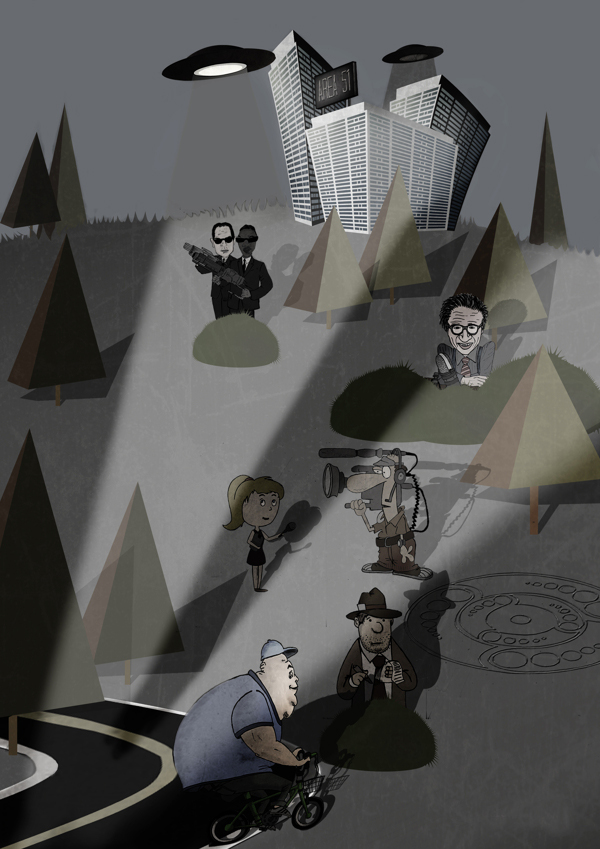
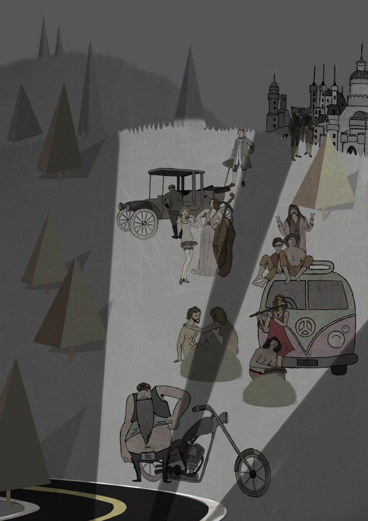

1. I’ve always had a fascination with headlights and any HBO writer or “Game of Thrones” enthusiast will agree: we can create any kind of world we want, as long as there is a story with some human truth behind it. Also, I adore Matthew Lyons illustrations. Thanks for the trees, Matt!
Turn on your headlights and discover all the secrets of the road.

Turn on your headlights and travel through time.

2. I never liked Batman. Out of all the heroes, he’s the biggest douchebag – smug, shallow and usually late.